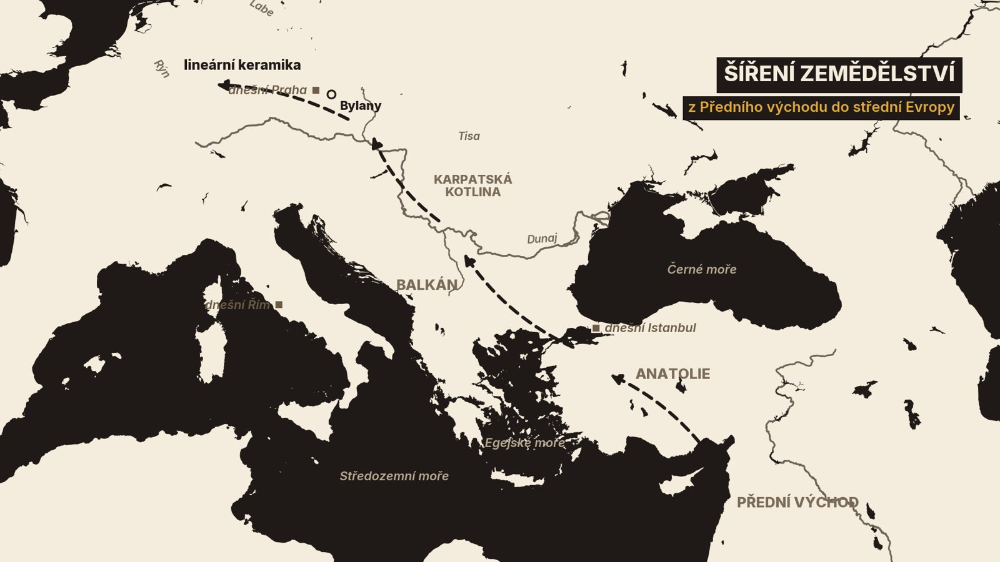
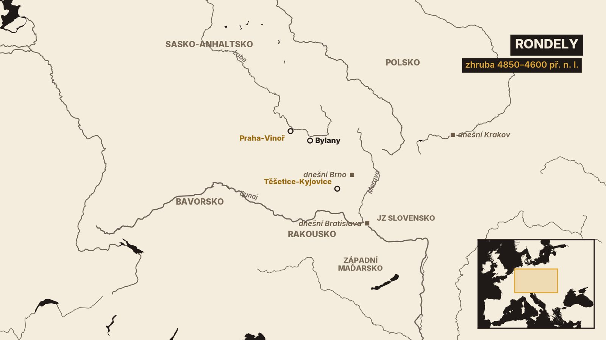
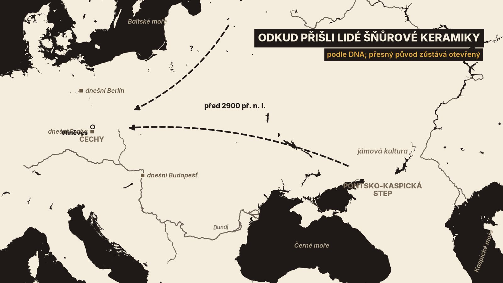
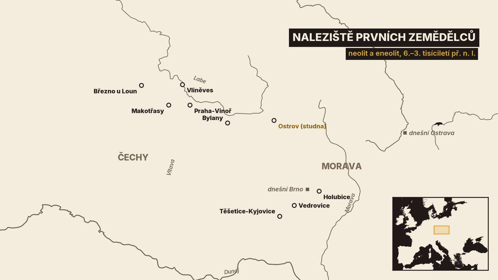

1. Studna z Ostrova
V roce 2018 se u obce Ostrov na Chrudimsku chystala stavba dálnice. Archeologové z Archeologického centra Olomouc tam při záchranném výzkumu narazili na dřevěnou studnu[12][13]. V rozích stály čtyři dubové sloupky s vydlabanými drážkami a do drážek byla zasunuta prkna[12]. Půdorys měří 80 × 80 centimetrů. Na výšku má asi 140 centimetrů[13][15].
Jak je stará? Odborníci z Mendelovy univerzity v Brně změřili letokruhy. Stromy na prkna byly skáceny na přelomu let 5256 a 5255 př. n. l.[12][20]. Rohové sloupky pocházejí z kmene poraženého asi o tři roky dřív[12]. Podle autorů studie je to nejstarší dřevěná stavba na světě, kterou se podařilo datovat podle letokruhů[15]. Ředitel olomouckého centra k tomu sám dodal, že takové prvenství bude nejspíš dočasné[13]. Starší studny, u kterých letokruhy změřit nejde, existovat mohou[13].
Tesaři, kteří studnu postavili, neznali kov. Pracovali nástroji z kamene, kostí, rohoviny nebo dřeva[13]. Dřevo se dochovalo přes sedm tisíc let, celé nasáklé vodou. Restaurátoři z Univerzity Pardubice je proto konzervovali roztokem cukru a dnes patří do sbírek Východočeského muzea v Pardubicích[12][14].
Kdo byli lidé, kteří tu studnu postavili? Patřili k prvním zemědělcům na našem území. V tomto díle projdeme přibližně tři tisíce let: od prvních polí a dlouhých domů přes velké kruhové stavby, kterým říkáme rondely, až po první měď, oradlo a vůz. A podíváme se, co o původu těchto lidí říká jejich DNA a co už neříká.
Jedno upozornění předem. Z této doby nemáme žádný písemný pramen. Všechno, co uslyšíte, stojí na nálezech, na jejich datování a na výkladu, který se s dalším výzkumem může změnit.
Začneme otázkou, odkud se zemědělství ve střední Evropě vzalo.
2. Odkud přišlo zemědělství
Před zemědělci žili v našich zemích lovci a sběrači. Archeologové jejich době říkají mezolit, střední doba kamenná[1].
Zemědělství vzniklo jinde: na Předním východě, kde lidé přešli od sběru k pěstování obilí a chovu zvířat[1]. Odtud se nový způsob obživy šířil přes Anatolii a Balkán do Karpatské kotliny. Dál postupoval podél velkých řek: po Dunaji a Tise, na sever podél Moravy, Odry a Visly, na západ k Labi a Rýnu[1].
Do střední Evropy dorazilo s kulturou, kterou archeologové pojmenovali podle výzdoby nádob: kultura s lineární keramikou. Jak si ti lidé říkali sami, nevíme. Kalibrovaná radiokarbonová data kladou tuto kulturu zhruba mezi roky 5600 a 5000 př. n. l.[1]. Radiokarbonové datování dává vždy rozpětí, ne přesný rok[1]. Přesný rok skácení stromu určí jen letokruhy, jako u studny z Ostrova[5].
A teď hlavní spor. Přišli do střední Evropy noví lidé, nebo se zemědělství naučili místní lovci? Starší výklad počítal s kolonizací od jihovýchodu[1]. Na konci 20. století se část badatelů přiklonila k opaku. Genetické studie tehdy vycházely z DNA dnešních Evropanů a naznačovaly, že podíl příchozích byl malý[1][8]. Ještě v roce 2007 proto souhrnná práce o českém neolitu psala, že roli domácích lovců je třeba přehodnotit[1].
Pak se podařilo číst DNA přímo z pravěkých kostí. Studie z roku 2015 ukázala, že první zemědělci v Německu, Maďarsku a Španělsku si byli navzájem blízce příbuzní a lišili se od místních lovců a sběračů[17]. Podle novějších prací pocházeli z přistěhovalců z Anatolie a byli od tamních zemědělců geneticky téměř k nerozeznání[16][19]. U lidí kultury s lineární keramikou z Německa vyšel podíl původu po místních lovcích jen na čtyři až pět procent[19]. V dalších tisíciletích tento podíl rostl[16][19].

Dnes tedy převažuje závěr, že zemědělství do střední Evropy přinesli hlavně příchozí lidé[16][17][19]. Opírá se hlavně o kostry z Německa, Maďarska a Španělska[17][19]. DNA ale neřekne, jakým jazykem mluvili ani jak jejich setkání s lovci vypadala. A každá studie stojí jen na kostrách, které se dochovaly a které někdo prozkoumal.
Jak tito lidé žili, ukázal nejlépe jeden výzkum u Kutné Hory.
3. Lidé dlouhých domů
V roce 1953 začal archeolog Bohumil Soudský kopat v Bylanech u Kutné Hory. Výzkum trval do roku 1967[3]. Archeologové odkryli víc než sedm hektarů a rozpoznali půdorysy téměř 150 dlouhých domů[3].
Neznamená to, že tu stálo velké sídlo. Osada fungovala asi pět století, až do konce 6. tisíciletí př. n. l., a domy se postupně obnovovaly. Současně jich stálo nejméně dva až tři, nejvýše jedenáct[3].
Z domů zbyly jen stopy po kůlech zapuštěných do země. Podle nich víme, že kostru tvořilo pět řad kůlů: vnitřní byly nosné, vnější tvořily základ hliněných stěn[1]. Jak dům vypadal nad zemí, je už rekonstrukce. Vychází z půdorysů a ze staveb, které známe z národopisu. Badatelé se například přou, jestli byla podlaha na zemi, nebo vyvýšená[4].
Co tito lidé pěstovali? V Čechách hlavně pšenici dvouzrnku, zřejmě spolu s jednozrnkou. Doložen je i hrách, čočka a len[1]. Pole si nepředstavujme jako dnešní lány. Podle jednoho z modelů šlo spíš o malé, pečlivě obdělávané plochy podobné zahradám, kde rodině stačil zhruba hektar. Oradlo tažené dobytkem v neolitu doloženo není[1].
Ke zpracování dřeva sloužil typický broušený kamenný nástroj, kopytovitý klín. Používal se jako tesla[1].
Bylanští archeologové zpracovali přes 70 000 střepů. Pomáhali si děrnými štítky a bylo to jedno z prvních využití informatiky v archeologii[3]. Právě podle výzdoby střepů se daří řadit domy v čase.
Jedna věc v Bylanech chybí. Přes velkou snahu se tu nenašlo pohřebiště této kultury[3].
Hroby prvních zemědělců proto musíme hledat jinde, na jižní Moravě.
4. Vedrovice: co prozradí hroby
Ve Vedrovicích na Znojemsku zkoumalo Moravské zemské muzeum od roku 1961 osadu ohrazenou příkopem a dvě pohřebiště kultury s lineární keramikou[11]. Na jednom z nich archeologové odkryli 96 hrobů z rané fáze této kultury[7]. Radiokarbonová data je kladou zhruba do let 5300 až 5200 př. n. l., tedy do doby krátce před stavbou studny v Ostrově[21].
Těla zemřelých byla posypána červeným barvivem, okrem. Do hrobu dostávali nádoby, kamenné nástroje a šperky z mramoru, ze zvířecích zubů a hlavně z lastur mořského mlže rodu Spondylus[7]. V hrobě číslo 46 ležel mladý muž. Měřil 166 centimetrů, což byla tehdy běžná výška. Měl u sebe nádobku, kamennou sekeru, štípané nástroje a velký závěsek ze spondylu[7].
Nejvíc o těch lidech prozradily přírodní vědy. Biochemické a genetické rozbory koster ukázaly, že byli překvapivě pohybliví[7]. Podle izotopů stroncia badatelé rozlišují, kdo byl místní a kdo přišel odjinud[21]. Někteří se podle badatelů do vesnice přistěhovali až během života. Jiní tu vyrostli, odešli a po letech se vrátili[7]. Stejně jako mořské lastury tedy putovali Evropou i lidé.
Další pohled do jejich světa nabízejí studny, jako ta z Ostrova. Ve vlhku se v nich dochovalo to, co jinde shnije: dřevo, kůra a lýko. Díky nim víme, že lidé nabírali vodu i do nádobek z březové kůry a že prasklou hliněnou nádobu uměli opravit smolou[5]. Studny z počátku neolitu jsou dnes v Evropě doloženy na více než padesáti nalezištích[20].
Kolem roku 5000 př. n. l. kultura s lineární keramikou končí[1]. Na ni v Čechách navazuje kultura s vypíchanou keramikou: výzdobu nádob teď místo rytých linií tvoří řady vpichů[1].
A právě v její době se ve střední Evropě objevují stavby, jaké tu do té doby nebyly.
5. Rondely
Říkáme jim rondely. Rondel je kruhový areál: jeden až čtyři příkopy se špičatým dnem a uvnitř jeden až tři kruhové žlábky, ve kterých stály kůly palisády. Dovnitř vedly dva až šest vstupů, nejčastěji čtyři[6]. Průměr bývá 30 až 80 metrů, výjimečně i přes sto metrů[6]. V Evropě jich známe kolem dvou set, od Bavorska a Saska-Anhaltska přes Polsko, Česko a Rakousko po jihozápadní Slovensko a západní Maďarsko[6][9].

Datování stojí na radiokarbonu. Předměty z příkopů spadají zhruba do let 4850 až 4600 př. n. l., možná jen do roku 4700[9]. Rondely jsou tedy víc než o 1 500 let starší než Stonehenge, kde první příkop s valem vznikl kolem roku 3000 př. n. l.[9][22]. A stavěly se jen krátce, sto padesát až dvě stě padesát let[9].
První rondel ve střední Evropě, který archeologové prozkoumali komplexně, leží u Těšetic-Kyjovic na Znojemsku. Patří kultuře s moravskou malovanou keramikou. Jeho příkop přerušují čtyři brány obrácené k hlavním světovým stranám a palisáda stála uvnitř i vně příkopu[10].
V roce 2022 zkoumal Archeologický ústav Akademie věd rondel v Praze-Vinoři. Má průměr asi 55 metrů a neobvyklé tři vstupy. Na poli se chystala stavba domů, a tak archeologové počítali s tím, že odkryjí asi devět desetin půdorysu[9].
Dva rondely stály i v Bylanech. Po zhruba třísetleté přestávce se tam totiž vrátili lidé s vypíchanou keramikou[3].
K čemu rondely sloužily? Tady končí nálezy a začínají hypotézy. Starší výklad v nich viděl pevnost nebo ohradu pro dobytek. Proti tomu mluví několik vstupů a val na vnější straně příkopu. Jiní badatelé uvažují o svatyni nebo o místě, odkud se sledoval pohyb nebeských těles[6]. Archeologové z pražského Archeologického ústavu mají za nejpravděpodobnější, že rondely sloužily hlavně jako shromaždiště pro lidi z širokého okolí[6]. Předměty z příkopů nepomáhají. Dostaly se tam nejspíš až poté, co rondel přestal sloužit[6].
Co přesně se uvnitř dělo, ale nevíme. Jisté je jen to, že na stavbě se muselo sejít mnoho lidí z různých osad[6].
Rondely zmizely a kolem poloviny 5. tisíciletí začíná období, které přineslo první kov.
6. Měď, oradlo a vůz
Tomu období říkáme eneolit, pozdní doba kamenná. V Čechách začíná kolem let 4500 až 4400 př. n. l. a končí kolem let 2300 až 2200 př. n. l., kdy nastupuje doba bronzová[2]. Trvá tedy přes dva tisíce let.
Někdy se mu říká doba měděná[2]. První měděné věci v Čechách jsou ale drobné: perly z plechu a drátěné kroužky z hrobů v Bílině a v Praze-Bubenči. Teprve později přibývají těžké předměty, sekery a sekeromlaty[2]. Hutnictví mědi se rozvinulo nejdřív na Balkáně, kolem poloviny 5. tisíciletí, později se měď zpracovávala i v severním předhůří Alp[2]. Že se s ní pracovalo také u nás, dokládá tyglík se stopami mědi ze sídliště v Makotřasech nedaleko Prahy[2]. Sídliště patří kultuře nálevkovitých pohárů, kterou archeologové kladou do doby zhruba od roku 3800 př. n. l.[2]. Obklopovalo je neobvyklé čtyřúhelníkové ohrazení. Autorka výzkumu je vykládá jako památník ovlivněný astronomickými znalostmi tehdejších lidí. I to je ovšem hypotéza[2].
Za nejvýraznější hospodářskou změnu eneolitu ale archeologové nepovažují měď. Považují za ni oradlo[2]. Dobytek přestal být jen zdrojem masa a mléka a začal tahat[2]. Přímý doklad orby uváděli badatelé z Čech ještě v roce 2008 jediný: stopy pod dlouhou mohylou v Březně u Loun[2].
A vůz? Že dobytek tahal i vozy, víme hlavně z okolních zemí. Z Polska pocházejí rytiny a hliněné modely vozů, z bažin v Nizozemsku a v severním Německu dřevěná plná kola. Na Moravě, v Holubicích, se našly lebky dobytčat zdeformované tahem[2].
Mění se i sídla. Velké neolitické osady mizí a nahrazují je menší[2]. Ve středním eneolitu vyrůstají osady na výšinách, obehnané příkopy. Nejlépe prozkoumaná je Homolka u Stehelčevsi, sídliště řivnáčské kultury. Archeologové tu rozpoznali 25 až 39 půdorysů obydlí, která ale jistě nestála všechna současně[2].
I v eneolitu se lidé stěhovali. Genetická studie koster z Čech ukázala, že lidé kultury nálevkovitých pohárů měli z větší části jiný než místní původ[16].
Největší změna ale přišla až na počátku 3. tisíciletí.
7. Šňůrová keramika a předkové ze stepí
Kolem roku 2900 př. n. l., nejpozději o století později, se v Čechách objevuje kultura se šňůrovou keramikou[2][16]. Jméno má podle výzdoby z otisků šňůry[2]. Známe ji skoro jen z hrobů[2]. V Čechách jich je evidováno asi 1 500[16].
A ty hroby se řídí přísným řádem. Muži leží na pravém boku hlavou k západu, ženy na levém boku hlavou k východu a všichni hledí k jihu. Muži mívají v hrobě kamenný sekeromlat, ženy náhrdelník[2].
Odkud se ti lidé vzali? Archeologové se o to přeli po celé 20. století. Ještě v roce 2008 souhrnná práce o českém eneolitu konstatovala, že původ kultury se nedaří jednoznačně určit a že svým rázem působí středoevropsky[2].

Pak promluvila genetika. Studie z roku 2015 zjistila, že lidé šňůrové keramiky z Německa měli asi tři čtvrtiny původu společné s pastevci jámové kultury z východoevropských stepí. Autoři to označili za doklad masivní migrace[17].
Podrobnější obraz dala studie 271 pravěkého genomu přímo z Čech[16]. Stepní původ potvrdila, ale přidala důležité výhrady. Nejstarší lidé šňůrové keramiky byli geneticky velmi různorodí. Na pohřebišti ve středočeské Vliněvsi neměli tři z patnácti zkoumaných raných jedinců stepní původ vůbec. Jejich hroby se přitom od ostatních nelišily. Mezi ranými jedinci bez stepního původu našla studie jen ženy, celkem čtyři[16]. A stepní původ podle autorů nelze celý odvodit od dosud známých koster jámové kultury. Odkud přesně první lidé šňůrové keramiky přišli, zůstává otevřené[16].
Genetika tedy říká, že přišli noví lidé. Neříká, kolik jich bylo, ani jestli přišli v míru. Stejné hroby pro lidi různého původu podle autorů ukazují, že se příchozí a místní spojovali do jedné společnosti[16].
Po několika staletích se pohřební zvyky změnily znovu a obrátily se doslova naruby.
8. Zvoncovité poháry
Kolem roku 2500 př. n. l. se v Čechách objevuje kultura zvoncovitých pohárů[2][16]. Bohatě zdobené poháry, podle kterých se jmenuje, se tehdy rozšířily po velké části západní a střední Evropy[18].
Pravidla pohřbívání jsou zrcadlově obrácená. Muži teď leží na levém boku hlavou k severu, ženy na pravém boku hlavou k jihu a všichni hledí k východu[2]. Muži dostávali do hrobu výbavu lučištníka: kamennou nátepní destičku, šípy s pazourkovými hroty a často také měděnou dýku. V bohatých ženských hrobech bývají ozdoby ze zlatého plechu a jantarové knoflíky[2].
Lov přitom v hospodářství těchto lidí velkou roli nehrál. Na sídlišti v Lipticích na Teplicku tvoří kosti divoké zvěře sotva desetinu a jinde ještě méně. Lukostřelba proto nejspíš souvisela víc se symbolikou boje než s lovem[2].
Šířili se s poháry lidé, nebo jen nápady? Velká genetická studie zahrnula přes dvě stě jedinců pohřbených s předměty této kultury. Odpověděla: obojí, podle toho kde. Lidé z Pyrenejského poloostrova a ze střední Evropy si byli geneticky vzdálení. Mezi těmito oblastmi se tedy šířily hlavně nápady. Většina zkoumaných lidí mimo Pyrenejský poloostrov přitom měla velký podíl stepního původu. V Británii naopak s poháry přišli noví lidé a během několika století se tam vyměnilo asi devět desetin genofondu[18].
Jeden hrob této kultury nás vrací na známé místo. V roce 2010 byl u Těšetic-Kyjovic, na lokalitě s rondelem, objeven komorový hrob vysoce postaveného muže[10].
Nejstarší radiokarbonová data únětické kultury, která v Čechách přichází potom, se pohybují kolem roku 2300 př. n. l.[2]. Tím doba kamenná končí.
Než ji opustíme, shrňme si, co si z těch tří tisíciletí odnést.
9. Co si odnést
Za prvé: zemědělství nevzniklo u nás. Přišlo z Předního východu a do našich zemí dorazilo s kulturou s lineární keramikou v polovině 6. tisíciletí př. n. l.. Podle DNA z pravěkých kostí je přinesli hlavně noví lidé[1][16][17][19].
Za druhé: tito lidé stavěli dlouhé domy a uměli pracovat se dřevem. Studna z Ostrova z přelomu let 5256 a 5255 př. n. l. je toho dokladem[3][12][20].
Za třetí: rondely se stavěly jen krátce, zhruba mezi lety 4850 a 4600 př. n. l.. K čemu sloužily, nevíme[6][9].
Za čtvrté: eneolit přinesl měď, oradlo a vůz[2].
A za páté: kolem roku 2900 př. n. l., nejpozději o století později, přišli s kulturou se šňůrovou keramikou lidé se stepním původem. Po nich následovala kultura zvoncovitých pohárů[2][16].
Dvě otázky zůstávají otevřené. K čemu sloužily rondely? A odkud přesně přišli první lidé šňůrové keramiky? Na obě možná odpovědí až další vykopávky a další rozbory DNA.

Příště nás čeká doba bronzová.
,_Brunnenbaureste_um_5300_v._Ch._.jpg){kind=link}
bewerkt.jpg){kind=link}


_Nationalmuseum_Prag_anagoria.jpg){kind=link}